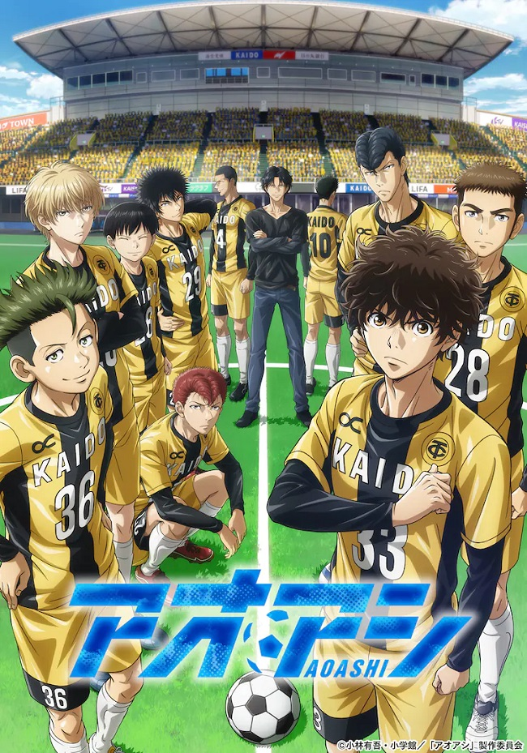

ONLY NEN
Home
Seasonal
Recommendations
News
Contact Us/Forms
Seasonl Anime

Aoashi:In a quiet rural town, the spotlight of a local junior high school football team rests on one player: Ashito Aoi. Known for his unpredictable moves and self-centered playing style, Ashito is the sole powerhouse pushing his team through an important high school preliminary tournament. However, their win streak is short-lived—an opponent causes Ashito to lose his temper and act violently, resulting in his removal from the rest of the game. Without their star player, the team is quickly eliminated from the tournament. Just as he believes all hope is lost, Ashito is approached by a youth team coach named Tatsuya Fukuda who senses potential in him, and Fukuda invites him for tryouts in Tokyo. In an unfamiliar setting surrounded by talent, Ashito must bring out the best of his ability to prove himself and secure what could be a life-changing career. Aoashi is going to make major waves this season. Watch Aoashi on Crunhyroll.
Spy X Family:For the agent known as "Twilight," no order is too tall if it is for the sake of peace. Operating as Westalis' master spy, Twilight works tirelessly to prevent extremists from sparking a war with neighboring country Ostania. For his latest mission, he must investigate Ostanian politician, Donovan Desmond, by infiltrating his son's school: the prestigious Eden Academy. Thus, the agent faces the most difficult task of his career: get married, have a child, and play family. Spy X Family is currently the most popular anime of the spring season so far. It is a must watch. Watch Spy X Family on Crunhyroll.
The Rise of a Shield Hero S2: The 2nd seaonson finally here, It has been 3 years since the first season. This series is the most aniticapted anime of spring! Sceduled for two cores with a total of 25 episodes. Watch The Rise of a Shield Hero S2 on Crunchyroll!
Summer Time Render:A sci-fi, summer story filled with suspense set on a small island with Shinpei Aijiro, whose childhood friend Ushio Kofune died. He returns to his hometown for the first time in two years for the funeral. Sou Hishigata, his best friend, suspects something's off with Ushio's death, and that someone can die next. A sinister omen is heard as an entire family next door suddenly disappears the following day. Furthermore, Mio implicates a "shadow" three days before Ushio's death. This one I am personally excited for, However for the west fandom the series is license to Disney Plus and has not been released to all regions. Still wanted to metion this gem of the spring season.
Love All Play!:Ryou Mizushima enrolls in junior high and joins the badminton club with great vigor. Although the club didn't have a proper coach, Mizushima improved his skills with his own physical strength by the time he participated in the prefectural tournament. Afterwards, he is approached by the Yokohama Minato High School's badminton coach, Ebihara. Indecisive and timid, Mizushima hesitates to attend such a prestigious school. However, with his elder sister Rika giving him a strong push, he decides to go to Yokohama Minato. Now blessed with a coach and idiosyncratic teammates, Mizushima will gain experience he's lacked till now, and aims to win the inter-high tournament. Love All Play is amazing so far with only 4 episodes into the seaoson it provide a refreshing take on the sports genere. Watch Love All Play on Crunchyroll!
Aoashi, Spy X Family, The Rise of a Shield Hero S2, Summer Time Rendering, Love All Play! Trailers
Your browser does not support the video tag.
Your browser does not support the video tag.
Your browser does not support the video tag.
Your browser does not support the video tag.
Your browser does not support the video tag.